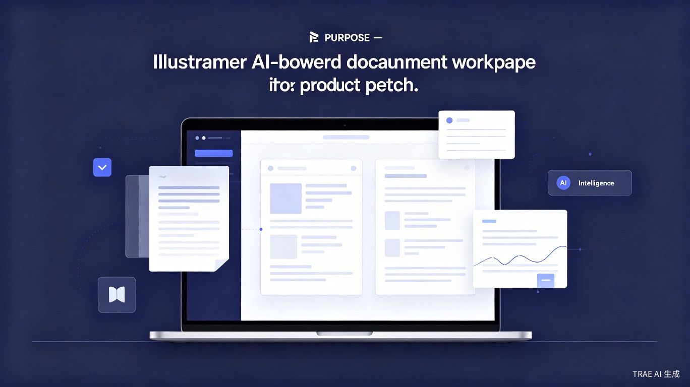
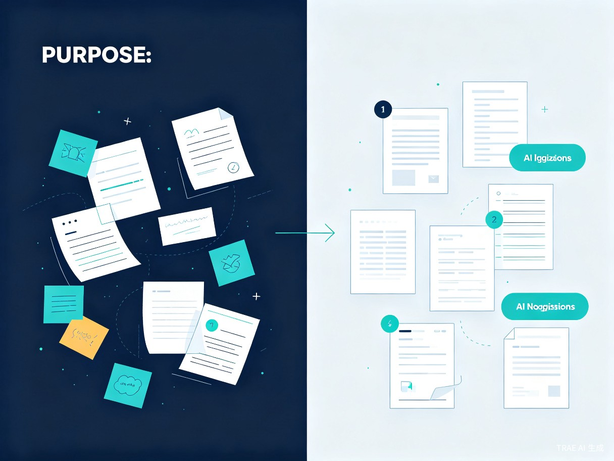

不止是又一个笔记应用。融合 Notion 的结构化文档管理、Obsidian 的本地优先隐私、AI 的写作辅助——一个工具，搞定记录、整理和成稿。
今天的知识工作者被困在工具割裂的困境里：用 Notion 管理文档，强依赖网络且数据托管在云端；用 Obsidian 追求本地隐私，却缺少原生 AI 能力，插件配置复杂得像在写代码；再用一个 AI 写作工具润色内容，三个环节彼此孤立，素材在复制粘贴中丢失上下文。
我们想做的是：一个工具，同时搞定记录、整理和成稿。它既有 Notion 的结构化文档管理体验，又具备 Obsidian 的本地优先与隐私保障，还内置了 AI 的写作辅助能力——从灵感捕捉到最终成稿，全程无缝衔接。
作为重度文字工作者，我每天都在经历这样的 friction：Notion 断网时无法编辑，敏感文档不敢往上放；Obsidian 界面复古，想调用 AI 得自己配置 API 和插件，门槛极高。市场上没有一款产品能同时满足「结构化 + 本地隐私 + 原生 AI」这三个需求。这个空白，就是我们的机会。
Windows / macOS / Linux 原生应用，数据完全本地存储，支持离线使用。
浏览器即可访问，支持多端同步，AI 能力云端加速，数据端到端加密。
会议中、通勤时、睡前，随时打开快速记录，AI 自动打标签归类。
基于目标岗位描述，AI 针对性优化表述，本地处理保护隐私。
结构化日报/周报模板，自动汇总任务进展，一键生成汇报文档。
从大纲到成稿，AI 辅助扩写、润色、查重，全程在一个工具内完成。

在一个工具中完成 想法记录 → 素材整理 → AI 润色成文 → 持久化保存 的完整闭环。用户不再需要为了写一个文档打开三个不同的应用，上下文始终连贯，创作心流不被打断。
本地优先架构意味着用户的文档默认存储在自己的设备上。即使使用云端同步，也采用 端到端加密，服务商无法读取内容。对于处理敏感商业信息、个人日记或尚未公开的创作内容，这一点至关重要。
基础功能免费，高级功能通过订阅制变现：
支持接入本地大模型（如 Ollama），敏感文档无需上传云端即可享受 AI 能力。
继承 Obsidian 的双向链接思想，但升级为块级精度，任何段落都可被引用和关联。
AI 根据内容类型自动推荐模板：会议纪要、项目计划、读书笔记、简历……一键套用。
自动保存文档历史版本，AI 辅助对比差异，随时回溯到任意时间点。